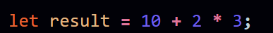

Q. Differentiate between unary, binary, and ternary operators in JavaScript. Give examples of each.
Precedence and associativity are essential concepts when working with multiple operators in an expression. They determine the order in which operations are performed, ensuring that expressions are evaluated correctly.
Precedence:
Precedence refers to the priority or order of evaluation among different operators. Higher precedence operators are evaluated first. JavaScript follows a set of rules that dictate the precedence of various operators. For example, in the expression a + b * c, multiplication has higher precedence than addition. Therefore, the multiplication (*) operation is performed first, followed by addition (+).
Associativity:
Associativity defines the order in which operators of the same precedence are evaluated. It can be left-to-right or right-to-left. For example, in the expression a = b = c, the assignment operator (=) is right-to-left associative. Therefore, c is assigned to b, and then the result of that assignment is assigned to a.
Importance of Understanding Precedence and Associativity:
-
Correct Evaluation:
Understanding precedence and associativity is crucial for ensuring that expressions are evaluated in the correct order. Misunderstanding these concepts can lead to unexpected results.
-
Code Readability:
Writing code with a clear understanding of precedence and associativity improves readability. It helps convey the intended order of operations to other developers who may read or maintain the code.
-
Avoiding Errors:
Knowing the rules prevents common errors in expressions where the order of operations may be ambiguous. It helps in writing expressions that produce the expected outcomes.
-
Optimizing Code:
In some cases, understanding precedence can help optimize code by eliminating the need for unnecessary parentheses. This can lead to more concise and efficient expressions.
Example:
In this example, the multiplication (*) has higher precedence than addition (+). Therefore, 2 * 3 is evaluated first, and then the result is added to 10. Understanding this precedence is essential for correctly predicting that result will be 16 rather than 36.